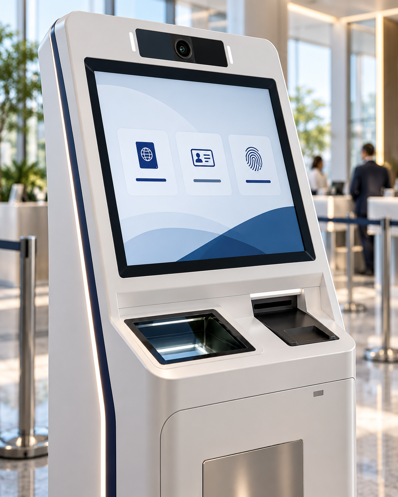

AAA contrast intent
The visual system targets WCAG 2.1 Level AAA contrast with high-contrast and text-size controls available from the welcome state.

AI-generated cover illustration. Project screens are shown below.
Designing a secure, intuitive biometric registration flow for first-time users at a standing self-service kiosk.
Product design / Service choreography
01 / Service risk
Biometric kiosks sit at the intersection of service operations, trust, hardware, and physical behavior. Users are standing in formal, time-sensitive environments and may be uncertain about sensitive-data capture.
The interface has to coordinate a clear digital instruction with the correct physical action while keeping consent, accessibility, help, and recovery visible.
02 / Architecture
The work moved from persona and emotional journey to information architecture, accessibility requirements, wireframes, and polished interface states.
The six-stage journey covers approach; welcome, language, and accessibility; ID input and consent; guided face capture with live feedback; verification; then completion and exit. Help and recovery remain available throughout.
03 / Accessibility by default
Accessibility was specified as a system requirement rather than a final compliance pass. Visual, physical, audible, and tactile support were considered together for a public standing kiosk.
The visual system targets WCAG 2.1 Level AAA contrast with high-contrast and text-size controls available from the welcome state.
Controls are sized for confident input and positioned within reach for standing users interacting with fixed hardware.
Built-in spoken guidance and feedback help users understand each step without relying only on visual instructions.
The concept includes braille numpad integration and haptic feedback for input and confirmation.
04 / Prototype foundation
The MVP turns the architecture into welcome, language, ID entry, face-scan, live-capture, confirmation, and completion states. Clear overlays and progress feedback make the machine feel supportive rather than opaque.
The design study moved from scenarios and desk research to wireframes and high-fidelity screens, establishing a concept foundation for later iris and fingerprint flows.
05 / Research framing
This independent study uses scenarios and desk research to frame a six-stage registration experience. It considers first-time users, sensitive-data capture and the physical demands of a standing kiosk. These are design inputs, not a substitute for observing people with the actual hardware in its intended environment.
A person may approach the kiosk without knowing how long registration takes or what the camera captures. Welcome, language selection, consent and guidance therefore carry part of the service experience. Instructions should explain the next action and its purpose before asking someone to move, enter information or face a sensor.
Assistance should remain discoverable throughout registration. A stalled face capture is not simply a technical error: it can leave someone unsure whether they moved incorrectly or whether their information was recorded. Recovery needs a specific instruction and a way to request human support when the flow cannot continue.
06 / Interaction & system
The face-capture flow connects a digital prompt with body position, camera feedback and confirmation. The interface should make the current task dominant and explain what will happen after capture. Distinguishing ready, capturing, reviewing and complete states prevents a progress indicator from becoming the only source of information.
The concept specifies generous touch targets, contrast intent, language choice and alternatives to visual guidance. Physical reach, screen angle, audio conditions and assistive hardware still require evaluation. A 44×44-pixel target is a design specification here, not evidence that the whole kiosk is accessible or certified.
Braille, haptics and spoken feedback are concept requirements that depend on hardware and service implementation. The same is true of secure handling and deletion of biometric information. The interface can explain consent and status, but a visual prototype cannot demonstrate the underlying security or operational behaviour.
07 / Evaluation plan
The screens translate the journey into welcome, language, ID entry, capture, confirmation and completion states. They provide a basis for discussing sequencing, instruction and feedback. The face-capture MVP remains a concept foundation; iris and fingerprint capture would need their own workflows and evaluation.
A next research round should include people with different reach, vision, hearing and digital-confidence needs. Ask them to start registration, understand consent, complete capture, recover from a failed attempt and exit safely. Observe the physical interaction as well as the screen, including where staff intervention becomes necessary.
Prioritise blocked completion, unclear consent and inaccessible controls before visual refinement. Review timeouts and session reset with the implementation team so one user’s information does not remain visible to the next. Treat accessibility, security and task completion as separate areas of evidence, each requiring validation beyond the prototype.
The first gesture
Have a good challenge?Let’s talk.